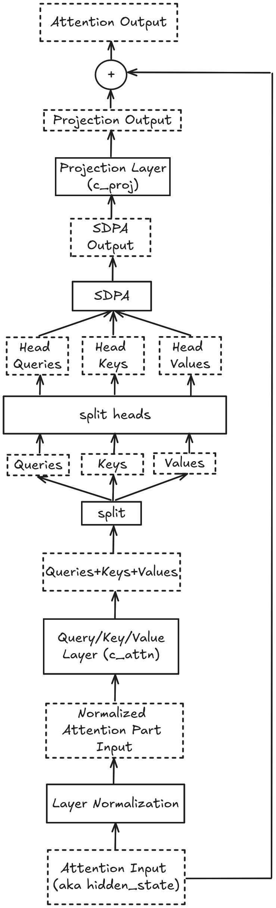

Deep Dive Into GPT-2#
In this chapter we take a deep dive into the architecture of one of the first truly Large Language Models - GPT-2. GPT-2 is an LLM that was released by OpenAI in 2019 and was followed by widespread public discussion about the potentials and dangers of LLMs.
The reason we chose GPT-2 is simple. The model is not too large (“just” 1.5 billion parameters), so you will be able to load it into the memory of your local machine without having to provision a GPU instance on some cloud provider.
As usual, we need to import a few things:
import torch
import torch.nn as nn
import transformers
from transformers import AutoTokenizer, AutoModelForCausalLM
/opt/hostedtoolcache/Python/3.9.19/x64/lib/python3.9/site-packages/tqdm/auto.py:21: TqdmWarning: IProgress not found. Please update jupyter and ipywidgets. See https://ipywidgets.readthedocs.io/en/stable/user_install.html
from .autonotebook import tqdm as notebook_tqdm
We will also disable the huggingface_hub progress bars as to not pollute the book (you should probably keep them though when following along):
import os
os.environ["HF_HUB_DISABLE_PROGRESS_BARS"] = "1"
Note that we use torch==2.4.0 and transformers==4.44.0.
If you want to follow along, you should also probably have these versions installed, otherwise you might need to change some of the code:
print(torch.__version__)
2.4.0+cu121
print(transformers.__version__)
4.44.0
The code in this chapter is written in such a way that it closely mimicks the code of the transformers codebase.
Generally, we highly encourage you to read the transformers codebase - it is well-written and easy to understand.
The most relevant file for the purposes of this chapter is models/gpt2/modeling_gpt2.py (especially the GPT2LMHeadModel, GPT2Block, GPT2SdpaAttention and GPT2MLP classes).
Loading the Model and Performing Inference#
First, let us load the gpt2 tokenizer and the gpt2 model:
%%capture
tokenizer = AutoTokenizer.from_pretrained("gpt2")
model = AutoModelForCausalLM.from_pretrained("gpt2")
print(type(tokenizer))
<class 'transformers.models.gpt2.tokenization_gpt2_fast.GPT2TokenizerFast'>
print(type(model))
<class 'transformers.models.gpt2.modeling_gpt2.GPT2LMHeadModel'>
Next let us perform some inference using an example text:
text = "This is an example sentence"
encoded_input = tokenizer(text, return_tensors="pt")
print(encoded_input)
{'input_ids': tensor([[1212, 318, 281, 1672, 6827]]), 'attention_mask': tensor([[1, 1, 1, 1, 1]])}
output = model(**encoded_input)
print(type(output))
<class 'transformers.modeling_outputs.CausalLMOutputWithCrossAttentions'>
The output of the model is a CausalLMOutputWithCrossAttentions object which has (among other things) a logits attribute.
This is basically the list of probabilities we discussed in chapter 1 except that it has the logits of the probabilities (for numerical reasons):
print(output.logits.shape)
torch.Size([1, 5, 50257])
print(output.logits)
tensor([[[ -35.8889, -35.2048, -39.1335, ..., -42.4868, -41.8196,
-36.0382],
[-107.7291, -108.0176, -113.2967, ..., -116.4645, -115.7444,
-110.8654],
[-100.5390, -99.8515, -103.7539, ..., -105.0177, -107.3317,
-102.0780],
[ -71.9370, -72.7244, -76.2083, ..., -82.9281, -81.7860,
-73.6416],
[-104.6989, -105.5694, -111.0104, ..., -116.2477, -115.0037,
-106.4377]]], grad_fn=<UnsafeViewBackward0>)
Note that output.logits is a tensor with three dimensions.
The first dimension is the batch size.
Since we only have a single text, the batch size is just 1.
The second dimension is the number of tokens in the sequence.
We have five tokens, therefore the second dimension has the size 5.
Finally, the third dimension is the size of the vocabulary (since we output a probability for every token).
Since the vocabulary size is 50257, the third dimension has the size 50257.
We want to predict the token that follows the last token. Therefore care about the probabilities of the tokens after the last token, so let’s extract that:
last_logits = output.logits[0, -1, :]
print(last_logits.shape)
torch.Size([50257])
print(last_logits)
tensor([-104.6989, -105.5694, -111.0104, ..., -116.2477, -115.0037,
-106.4377], grad_fn=<SliceBackward0>)
Let’s now get the actual probabilities:
probas = torch.softmax(last_logits, dim=0)
print(probas)
tensor([1.0367e-03, 4.3414e-04, 1.8819e-06, ..., 1.0002e-08, 3.4703e-08,
1.8218e-04], grad_fn=<SoftmaxBackward0>)
Finally, we sample the next token from this probability distribution. There are many different ways to do that - the simplest is to just get the token with the highest probability:
next_token_id = torch.argmax(probas, dim=-1)
print(next_token_id)
tensor(326)
next_token = tokenizer.decode(next_token_id)
print(next_token)
that
Let’s also have a look at the 10 most probable tokens:
top_k = 10
top_k_probs, top_k_ids = torch.topk(probas, top_k)
top_k_tokens = [(token_id, tokenizer.decode(token_id)) for token_id in top_k_ids]
for (token_id, token), prob in zip(top_k_tokens, top_k_probs):
print(f"Token: {token} (ID = {token_id}), Probability: {round(prob.item(), 2)}")
Token: that (ID = 326), Probability: 0.15
Token: from (ID = 422), Probability: 0.12
Token: . (ID = 13), Probability: 0.11
Token: , (ID = 11), Probability: 0.1
Token: : (ID = 25), Probability: 0.09
Token: of (ID = 286), Probability: 0.05
Token: in (ID = 287), Probability: 0.04
Token: with (ID = 351), Probability: 0.02
Token: which (ID = 543), Probability: 0.02
Token: and (ID = 290), Probability: 0.02
We see that all of these tokens are reasonable next tokens for the sentence "This is an example sentence".
In fact, instead of simply selecting the most probably next token at every step (which often leads to repetitive and boring texts), we could sample from the probability distribution. Here we would choose a random token weighted by the probabilities of the tokens (i.e. tokens with higher probabilities are more likely to be sampled):
# Set a random seed for reproducibility
torch.manual_seed(42)
sampled_token_id = torch.multinomial(probas, num_samples=1)[0]
print(sampled_token_id)
tensor(25)
print(tokenizer.decode(sampled_token_id))
:
Now that we have seen how to automatically compute the probabilities of the next token, let’s redo the calculations manually - layer by layer. Before we do that, we will inspect the architecture of the model first to see what layers are actually present.
The Architecture#
The model we have loaded is actually a torch.nn.Module which is the PyTorch base class for all neural network modules:
print(isinstance(model, nn.Module))
True
There are many ways to inspect the architecture of a torch.nn.Module, here we simply print the model:
print(model)
GPT2LMHeadModel(
(transformer): GPT2Model(
(wte): Embedding(50257, 768)
(wpe): Embedding(1024, 768)
(drop): Dropout(p=0.1, inplace=False)
(h): ModuleList(
(0-11): 12 x GPT2Block(
(ln_1): LayerNorm((768,), eps=1e-05, elementwise_affine=True)
(attn): GPT2SdpaAttention(
(c_attn): Conv1D()
(c_proj): Conv1D()
(attn_dropout): Dropout(p=0.1, inplace=False)
(resid_dropout): Dropout(p=0.1, inplace=False)
)
(ln_2): LayerNorm((768,), eps=1e-05, elementwise_affine=True)
(mlp): GPT2MLP(
(c_fc): Conv1D()
(c_proj): Conv1D()
(act): NewGELUActivation()
(dropout): Dropout(p=0.1, inplace=False)
)
)
)
(ln_f): LayerNorm((768,), eps=1e-05, elementwise_affine=True)
)
(lm_head): Linear(in_features=768, out_features=50257, bias=False)
)
The model has two parts - a transformer and an lm_head.
Two things should be noted here.
First, the tokenizer is not part of the model as it is already represented by the tokenizer variable.
Second, the transformer object has both the embedding block and the transformer (in terms of the terminology introduced in chapter 1).
Looking closely, we see that the model has two embedding layers at the beginning - wte and wpe.
The wte layer is the embedding layer for the tokens:
print(model.transformer.wte)
Embedding(50257, 768)
The wpe layer is the positional embedding layer:
print(model.transformer.wpe)
Embedding(1024, 768)
These layers are followed by a dropout layer:
print(model.transformer.drop)
Dropout(p=0.1, inplace=False)
Next, we have a module list consisting of 12 “GPT blocks”:
print(type(model.transformer.h))
<class 'torch.nn.modules.container.ModuleList'>
print(len(model.transformer.h))
12
Each block is a so called GPT2Block object:
print(type(model.transformer.h[0]))
<class 'transformers.models.gpt2.modeling_gpt2.GPT2Block'>
Looking inside such a GPT2Block, we will see a lot of very familiar things:
print(model.transformer.h[0])
GPT2Block(
(ln_1): LayerNorm((768,), eps=1e-05, elementwise_affine=True)
(attn): GPT2SdpaAttention(
(c_attn): Conv1D()
(c_proj): Conv1D()
(attn_dropout): Dropout(p=0.1, inplace=False)
(resid_dropout): Dropout(p=0.1, inplace=False)
)
(ln_2): LayerNorm((768,), eps=1e-05, elementwise_affine=True)
(mlp): GPT2MLP(
(c_fc): Conv1D()
(c_proj): Conv1D()
(act): NewGELUActivation()
(dropout): Dropout(p=0.1, inplace=False)
)
)
The module list with the GPT blocks is followed by one last layer normalization:
print(model.transformer.ln_f)
LayerNorm((768,), eps=1e-05, elementwise_affine=True)
The final component of the entire model is a linear layer which is responsible for computing the logits of the probabilities of the next token:
print(model.lm_head)
Linear(in_features=768, out_features=50257, bias=False)
Generally speaking - whenever you want to find out how a particular LLM model works, it is extremely instructive to print out its architecture to get a basic view of the components it has.
Now let’s see how the tensors actually flow through the model.
We will start with the embeddings.
Embeddings#
Let’s retrieve the token IDs of our example text:
token_ids = encoded_input["input_ids"]
token_ids
tensor([[1212, 318, 281, 1672, 6827]])
Let’s also get the attention mask for later:
attention_mask = encoded_input["attention_mask"]
print(attention_mask)
tensor([[1, 1, 1, 1, 1]])
Let’s also generate the position IDs.
For every token ID we need a corresponding position ID.
The position ID sequence is constructed by simply starting at 0 and then counting up to len(token_ids) - 1.
position_ids = torch.tensor([[0, 1, 2, 3, 4]], dtype=torch.long)
Let’s now calculate the token embeddings.
This is just a matter of applying the token embedding layer (i.e. wte) to the tensor containing the token IDs:
token_embeds = model.transformer.wte(token_ids)
We can do a quick dimensionality check.
The token_ids is a sequence of dimension 1x5 (batch size 1 and sequence length of 5).
For every token we compute an embedding of dimension 768 - therefore the output tensor should have a dimension of 1x5x768.
This is indeed the case:
print(token_embeds.shape)
torch.Size([1, 5, 768])
Let’s also calculate the positional embeddings.
This calculation is very similar to the calculation of the token embeddings, except that we now apply the positional embedding layer (i.e. wpe) to the tensor containing the position IDs:
position_embeds = model.transformer.wpe(position_ids)
Again, we do a quick dimensionality check.
The position_ids sequence is a sequence of dimension 1x5 (batch size 1 and 5 position IDs).
For every position we compute an embedding of dimension 768 and so the resulting output tensor should have a dimension of 1x5x768:
print(position_embeds.shape)
torch.Size([1, 5, 768])
To get the final embeddings we simply add the token embeddings and the positional embeddings.
These final embeddings will also be what we pass to the module block as the first layer input.
Since the transformers codebase refers to the intermediate tensors in the module block as “hidden states”, we will stick to that convention:
hidden_states = token_embeds + position_embeds
print(hidden_states.shape)
torch.Size([1, 5, 768])
Here is a graphic representation of the tensor flow so far:
The First GPT2 Block#
Let’s now have a look at the module list, specifically its first “GPT block”.
First, we will give both the module list and the GPT block more meaningful names than h and h[0]:
layer_blocks = model.transformer.h
layer_block = layer_blocks[0]
As a reminder, here is how the layer block looks like:
print(layer_block)
GPT2Block(
(ln_1): LayerNorm((768,), eps=1e-05, elementwise_affine=True)
(attn): GPT2SdpaAttention(
(c_attn): Conv1D()
(c_proj): Conv1D()
(attn_dropout): Dropout(p=0.1, inplace=False)
(resid_dropout): Dropout(p=0.1, inplace=False)
)
(ln_2): LayerNorm((768,), eps=1e-05, elementwise_affine=True)
(mlp): GPT2MLP(
(c_fc): Conv1D()
(c_proj): Conv1D()
(act): NewGELUActivation()
(dropout): Dropout(p=0.1, inplace=False)
)
)
Basically, a GPT2Block has two parts - an attention part and a MLP part.
The attention part consists of a LayerNorm layer, followed by a GPT2SdpaAttention block which contains the attention mechanism.
The MLP part consists of a LayerNorm layer, followed by a GPT2MLP block which contains a simple MLP with two linear layers separated by a non-linear activation function.
We will now look at both parts in detail.
Let’s rename the tensor and also save it in another variable since we will need it later:
attention_input = hidden_states
attention_residual = attention_input
The Attention Part#
First, we perform layer normalization on our tensor using the LayerNorm layer.
Remember that this operation does not change the dimension of the tensor:
normalized_attention_input = layer_block.ln_1(attention_input)
print(normalized_attention_input.shape)
torch.Size([1, 5, 768])
Next, we want to get the query, key and value tensors.
This is what the c_attn layer is for:
query_key_value = layer_block.attn.c_attn(normalized_attention_input)
print(query_key_value.shape)
torch.Size([1, 5, 2304])
Again, the first dimension of the tensor is the batch size (which is 1) and the second dimension the number of tokens (which is 5).
The third dimension is more complicated.
Basically in the transformer codebase the calculation of the queries, keys and values are combined in a single operation.
Therefore the output tensor contains the queries, keys and value all in one object.
This is why the third dimension is 2304 = 768 * 3 (since we store queries and keys and values and each of these has 768 items).
Since we want to work with these tensors separately, we need to split them out using the split function.
We have three dimensions and the queries, keys and values are split across the dimension number 2, so we need to split across dim=2.
The order of the items in the tensor is query first, key second and value third:
queries, keys, values = query_key_value.split(768, dim=2)
print(queries.shape, keys.shape, values.shape)
torch.Size([1, 5, 768]) torch.Size([1, 5, 768]) torch.Size([1, 5, 768])
Next, we need to split the attention heads.
To accomplish this, we will simply reuse the _split_heads helper function from the transformers codebase:
def _split_heads(tensor, num_heads, attn_head_size):
"""
Splits hidden_size dim into attn_head_size and num_heads.
This function is taken directly from the transformers codebase.
"""
new_shape = tensor.size()[:-1] + (num_heads, attn_head_size)
tensor = tensor.view(new_shape)
return tensor.permute(0, 2, 1, 3)
The GPT-2 model has 12 attention heads and a head dimension of 64:
num_heads = 12
head_dim = 64
head_queries = _split_heads(queries, num_heads, head_dim)
head_keys = _split_heads(keys, num_heads, head_dim)
head_values = _split_heads(values, num_heads, head_dim)
print(head_queries.shape, head_keys.shape, head_values.shape)
torch.Size([1, 12, 5, 64]) torch.Size([1, 12, 5, 64]) torch.Size([1, 12, 5, 64])
Next, we compute the attention scores:
sdpa_output = torch.nn.functional.scaled_dot_product_attention(
head_queries,
head_keys,
head_values,
attn_mask=None,
dropout_p=0.0,
is_causal=True,
)
print(sdpa_output.shape)
torch.Size([1, 12, 5, 64])
Now its time to merge the attention heads back together:
sdpa_output_transposed = sdpa_output.transpose(1, 2).contiguous()
sdpa_output_view = sdpa_output_transposed.view(1, 5, 768)
Let’s double check the dimension:
print(sdpa_output_view.shape)
torch.Size([1, 5, 768])
Now, we pass the the tensor through the projection layer c_proj:
projection_output = layer_block.attn.c_proj(sdpa_output_view)
Again, we verify the dimension:
print(projection_output.shape)
torch.Size([1, 5, 768])
Finally, we add our saved hidden state to the output:
attention_output = projection_output + attention_residual
This is called a residual connection.
Generally, we speak of residual connections if there is some function of the form \(y = f(x) + x\) (in this case x is the input hidden state).
Residual connections essentially helps with propagating the “signal” across layers (both in the forward and the backward pass).
Especially for the backward pass, such connections can help addressing the vanishing gradient problem (discussed in the chapter on computational graphs). We can see this by comparing the derivative of a hypothetical loss function (with respect to the input \(x\)) with a residual connection and without a residual connection.
Let’s compute \(\frac{\partial L}{\partial x}\):
\(\frac{\partial L}{\partial x} = \frac{\partial L}{\partial y} \frac{\partial y}{\partial x} = \frac{\partial L}{\partial y} (1 + \frac{\partial}{\partial x} f(x)) = \frac{\partial L}{\partial y} + \frac{\partial L}{\partial y} \frac{\partial}{\partial x} f(x)\)
Without the residual connection the derivative would simply be \(\frac{\partial L}{\partial y} \frac{\partial}{\partial x} f(x)\).
With the residual connection however, we directly add the term \(\frac{\partial L}{\partial y}\) on top of that.
This means that even if the gradient of f is vanishingly small, this won’t be true for the gradient \(\frac{\partial L}{\partial x}\) and there should be a meaningful update when we perform gradient descent.
Let’s print the shape of attention_output.
Note that the attention part of the GPT block did not change the shape of the tensor, only its values:
print(attention_output.shape)
torch.Size([1, 5, 768])
print(attention_input)
tensor([[[ 0.0065, -0.2930, 0.0762, ..., 0.0184, -0.0275, 0.1638],
[ 0.0142, -0.0437, -0.0393, ..., 0.1487, -0.0278, -0.0255],
[-0.0828, -0.0964, 0.1232, ..., 0.0530, 0.0755, -0.1057],
[ 0.0714, -0.2025, 0.1870, ..., -0.3685, -0.0108, -0.1304],
[-0.0888, -0.0326, 0.1666, ..., -0.2539, -0.0370, -0.2046]]],
grad_fn=<AddBackward0>)
print(attention_output)
tensor([[[ 0.6158, -0.5796, 0.3292, ..., 0.0484, -0.0504, 0.1853],
[-0.2766, -0.3195, 0.2326, ..., 0.1510, 0.0209, -0.0308],
[-0.4673, -0.0429, 0.4036, ..., 0.0257, 0.1020, -0.1085],
[-0.4814, -0.2070, 0.0321, ..., -0.3712, -0.0445, -0.1020],
[-1.4112, 0.7068, -0.2456, ..., -0.2627, -0.0697, -0.2511]]],
grad_fn=<AddBackward0>)
Here is a visualization of the process:

The MLP Part#
The second part of the GPT block is the MLP part.
Again, we first save the current hidden state tensor:
mlp_input = attention_output
mlp_residual = mlp_input
And - again - we first pass the tensor through a layer normalization block:
normalized_nlp_input = layer_block.ln_2(mlp_input)
print(normalized_nlp_input.shape)
torch.Size([1, 5, 768])
Next, we pass the hidden states through the MLP block.
The MLP block contains a linear layer, followed by a non-linear activation function, followed by another linear layer:
print(layer_block.mlp)
GPT2MLP(
(c_fc): Conv1D()
(c_proj): Conv1D()
(act): NewGELUActivation()
(dropout): Dropout(p=0.1, inplace=False)
)
Here is how the tensor flow looks like:
c_fc_output = layer_block.mlp.c_fc(normalized_nlp_input)
act_output = layer_block.mlp.act(c_fc_output)
c_proj_output = layer_block.mlp.c_proj(act_output)
print(c_proj_output.shape)
torch.Size([1, 5, 768])
Finally, we have another residual connection:
mlp_output = mlp_residual + c_proj_output
print(mlp_output.shape)
torch.Size([1, 5, 768])
mlp_output
tensor([[[ 1.1035, -0.2464, 0.3231, ..., -1.1987, -0.6627, 1.9803],
[-1.3085, -0.2814, -0.8437, ..., 0.2028, 0.1010, 0.7039],
[-0.9680, -0.7868, 0.1910, ..., -0.4938, -0.0832, -1.1468],
[-2.1911, -0.1754, -1.5701, ..., -2.0236, 0.8131, 1.1406],
[-3.2628, 2.9190, -0.5089, ..., 0.0336, -0.0497, -0.7092]]],
grad_fn=<AddBackward0>)
Here is a visualization of the MLP part:
The Other GPT Blocks#
Now, we simply pass the hidden states through one block after the other, where the output of each block is the input to the next block.
Note that we alredy passed the tensor through the first block, so we will only consider the other 11 blocks:
hidden_states = mlp_output
for block in model.transformer.h[1:]:
hidden_states = block(hidden_states)[0]
Since every block only changes the values of the tensor, but not its shape, the shape of the final tensor is unchanged as well:
print(hidden_states.shape)
torch.Size([1, 5, 768])
Finally, we pass the final result through one last layer normalization:
hidden_states = model.transformer.ln_f(hidden_states)
print(hidden_states.shape)
torch.Size([1, 5, 768])
Calculating the Logits#
At last, we use the lm_head layer to calculate the logits:
logits = model.lm_head(hidden_states)
print(logits.shape)
torch.Size([1, 5, 50257])
Let’s verify that our calculations are correct by checking if the logits tensor we computed manually is the same as output.logits:
print((output.logits == logits).all())
tensor(True)
print(layer_block)
GPT2Block(
(ln_1): LayerNorm((768,), eps=1e-05, elementwise_affine=True)
(attn): GPT2SdpaAttention(
(c_attn): Conv1D()
(c_proj): Conv1D()
(attn_dropout): Dropout(p=0.1, inplace=False)
(resid_dropout): Dropout(p=0.1, inplace=False)
)
(ln_2): LayerNorm((768,), eps=1e-05, elementwise_affine=True)
(mlp): GPT2MLP(
(c_fc): Conv1D()
(c_proj): Conv1D()
(act): NewGELUActivation()
(dropout): Dropout(p=0.1, inplace=False)
)
)